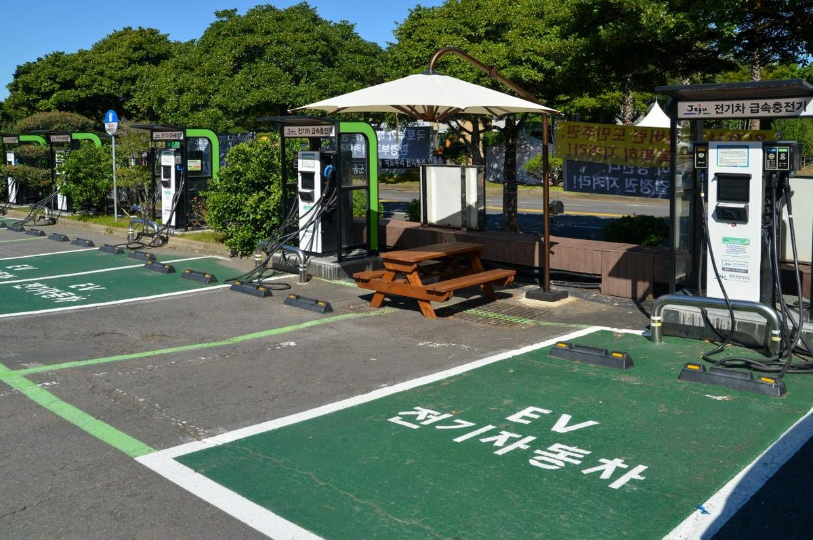

제주, 제2기 분산에너지 특구 신청 모델 3개 내놔…신례1리 100세대 이웃 간 전력 직거래, 함덕 임대주택 48세대 지붕 태양광 공유

같은 변전소 생활권 660만㎡ 안에서 한 해 발전량 70% 이상을 직접 쓰는 '커뮤니티 마이크로그리드형'…11월 5일까지 도민 의견 받아 신청, 지정 여부는 12월 결정
제주도가 제2기 분산에너지 특화지역 가운데 '커뮤니티 마이크로그리드형' 지정을 신청하려고 주택마을형·아파트형·산단형 등 제주형 모델 3개를 마련하고 11월 5일까지 도민 의견을 받는다. 주택마을형은 서귀포시 신례1리 100세대가 마을 안 태양광과 에너지저장장치(ESS)로 전기를 마련하고 남는 전력을 이웃끼리 직접 사고파는 방식이고, 아파트형은 제주시 함덕리 임대주택 2개 동 48세대의 지붕 등에 태양광을 달아 만든 전기를 입주민 모두가 함께 쓰는 방식이며, 산단형은 용암해수단지 안 태양광과 ESS로 입주기업에 전력을 대는 방식이다. 커뮤니티 마이크로그리드형은 같은 변전소 생활권역 안 660만㎡ 이하 구역에서 한 해 발전량의 70% 이상을 구역 안에서 직접 소비해야 하는 유형으로, 도는 의견 수렴을 마친 뒤 기후에너지환경부에 최종 신청서를 내고 지정 여부는 12월에 가려진다. 2023년 6월 제정된 분산에너지 활성화 특별법에 따라 2025년 11월 1기 특화지역으로 지정된 제주는 지금 쏘카 전기차 20대와 도민 전기차 40대가 참여하는 V2G(전기차-전력망 연계) 시범사업을 벌이고 있으며, 11월에 도민 전기차 40대를 더 모으고 내년부터 전력시장 참여 실증을 본격화한다. 정부와 도가 설치비의 70%를 보조하는 히트펌프도 올해 2,460가구 보급 계획 가운데 9월까지 1,746가구가 지원 대상으로 뽑혔다. 도 관계자는 지금은 실증 단계라 V2G 전력도 한전을 거쳐 팔아야 하지만 2028년 가상발전소(VPP)가 제도화되면 직접 거래가 가능해진다고 설명했다.
시민에너지 관점
마을 100세대와 임대아파트 48세대가 '만든 곳에서 쓰고 남으면 이웃에게 판다'는 단위로 특구 신청 모델에 오른 것은, 분산에너지 특구가 큰 산업단지만의 제도가 아니라 생활 공동체의 제도가 될 수 있다는 신호다. 마을 단위 전력망은 관리가 까다로워 결국 전문 사업자에게 넘겨야 한다는 우려도 있지만, 스코틀랜드 에이그섬은 2008년부터 주민 공동체가 소유한 회사가 섬의 태양광·풍력·소수력 전력망을 직접 꾸려 왔고, 운영을 전문 기관과 나누더라도 설비를 누가 갖고 수익을 누가 가져갈지는 따로 정할 수 있다. 지금 공개된 모델에는 바로 그 소유와 수익 배분이 비어 있어, 이 빈칸을 마을 협동조합과 입주민 출자로 채워야 전기를 나눠 쓰는 공동체가 이익도 나누는 공동체가 된다. 11월 5일 의견 수렴 기한 안에 주민과 지역 단체가 소유 구조와 수익 배분 원칙을 모델에 담으라고 요구해야 한다.
출처: 한라일보 2026-10-29 이상민 원문 보기
済州道、第2期分散エネルギー特区の申請モデル3つを公表…新礼1里100世帯は近隣同士で電力を直接取引、咸徳の賃貸住宅48世帯は屋根上太陽光を共有
同じ変電所の生活圏660万㎡内で年間発電量の70%以上を直接消費する「コミュニティ・マイクログリッド型」…11月5日まで道民の意見を募って申請、指定の可否は12月に決定
韓国・済州道は、第2期分散エネルギー特化地域のうち「コミュニティ・マイクログリッド型」の指定を申請するため、住宅集落型・マンション型・産業団地型の済州型モデル3つをまとめ、11月5日まで道民の意見を募る。住宅集落型は西帰浦市新礼1里の100世帯が集落内の太陽光とエネルギー貯蔵装置（ESS）で電気をまかない、余った電力を近隣同士で直接売買する方式、マンション型は済州市咸徳里の賃貸住宅2棟48世帯の屋根などに太陽光を設置し、つくった電気を入居者全員で使う方式、産業団地型は溶岩海水団地内の太陽光とESSで入居企業に電力を供給する方式だ。コミュニティ・マイクログリッド型は、同じ変電所の生活圏域内の660万㎡以下の区域で年間発電量の70%以上を区域内で直接消費しなければならない類型で、道は意見募集を終えた後に気候エネルギー環境部へ最終申請書を提出し、指定の可否は12月に決まる。2023年6月に制定された分散エネルギー活性化特別法に基づき2025年11月に第1期特化地域に指定された済州は、現在カーシェア大手ソカの電気自動車20台と道民所有の電気自動車40台が参加するV2G（電気自動車と電力網の連携）モデル事業を進めており、11月に道民の電気自動車40台を追加で募集し、来年から電力市場参加の実証を本格化させる。政府と道が設置費の70%を補助するヒートポンプも、今年の普及計画2,460世帯のうち9月までに1,746世帯が支援対象に選ばれた。道の関係者は、現在は実証段階のためV2Gの電力も韓国電力を通じて売らなければならないが、2028年に仮想発電所（VPP）が制度化されれば直接取引が可能になると説明した。
市民エネルギーの視点
集落の100世帯と賃貸マンションの48世帯が「つくった場所で使い、余れば近所に売る」単位で特区申請モデルに載ったことは、分散エネルギー特区が大きな産業団地だけの制度ではなく、暮らしの共同体の制度になりうることを示すサインだ。集落単位の電力網は管理が難しく、結局は専門事業者に任せるしかないとの懸念もあるが、スコットランドのエッグ島では2008年から住民共同体が所有する会社が島の太陽光・風力・小水力の電力網を自ら運営してきたし、運営を専門機関と分担するとしても、設備を誰が持ち収益を誰が受け取るかは別に決められる。いま公表されたモデルではまさにその所有と収益配分が空白になっており、この空白を集落の協同組合と入居者の出資で埋めてこそ、電気を分け合う共同体が利益も分け合う共同体になる。11月5日の意見募集期限までに、住民と地域団体は所有構造と収益配分の原則をモデルに盛り込むよう求めるべきだ。
出典: ハルラ日報 2026-10-29 イ・サンミン 原文を読む
韩国济州公布第二期分布式能源特区申请模式3种…新礼1里100户邻里直接交易电力，咸德租赁住宅48户共享屋顶光伏
在同一变电站生活圈660万平方米内就地消纳年发电量70%以上的"社区微电网型"…11月5日前征求道民意见后申请，是否获指定12月揭晓
韩国济州特别自治道为申请第二期分布式能源特化地区中的"社区微电网型"，制定了住宅村落型、公寓型和产业园区型3种济州模式，并在11月5日前征求道民意见。住宅村落型是由西归浦市新礼1里的100户用村内光伏和储能系统（ESS）供电，多余电力在邻里之间直接买卖；公寓型是在济州市咸德里租赁住宅2栋48户的屋顶等处安装光伏，所发电力由全体住户共同使用；产业园区型则利用熔岩海水园区内的光伏和ESS向入驻企业供电。社区微电网型要求在同一变电站生活圈内面积660万平方米以下的区域，将年发电量的70%以上在区域内直接消纳。济州道将在意见征集结束后向气候能源环境部提交最终申请书，是否获得指定将在12月决定。根据2023年6月制定的《分布式能源活性化特别法》，济州于2025年11月被指定为第一期特化地区，目前正在开展由汽车共享企业SOCAR的20辆电动汽车和道民拥有的40辆电动汽车参与的V2G（车辆与电网互动）示范项目，11月将再招募40辆道民电动汽车，明年起全面推进参与电力市场的实证。政府和道厅补贴安装费70%的热泵，今年计划推广2,460户，截至9月已有1,746户入选。道厅相关人士表示，目前处于实证阶段，V2G电力仍须经由韩国电力公社出售，但2028年虚拟电厂（VPP）制度化后即可直接交易。
市民能源视角
村里的100户和租赁公寓的48户，以"在哪里发电就在哪里用，用不完卖给邻居"为单位进入特区申请模式，这表明分布式能源特区不只属于大型产业园区，也可以成为生活共同体的制度。有人担心村级电网管理复杂，最终只能交给专业企业，但苏格兰埃格岛自2008年起就由居民共同体所有的公司自行运营岛上的光伏、风电和小水电电网；即使与专业机构分担运营，设备归谁所有、收益归谁，也可以另行约定。目前公布的模式恰恰在所有权和收益分配上留了空白，只有用村级合作社和住户出资填补这一空白，共享电力的共同体才会成为共享收益的共同体。在11月5日意见征集截止前，居民和地方团体应要求把所有权结构和收益分配原则写进模式。
来源: 汉拿日报 2026-10-29 Lee Sang-min 查看原文
Jeju unveils three models for second-round distributed energy zone bid: 100 households in Sillye-1-ri to trade power with neighbours, 48 rental flats in Hamdeok to share rooftop solar
The "community microgrid" type requires at least 70% of annual output to be used within an area of up to 6.6 million square metres served by one substation; public comments run to 5 November, and a decision on designation is due in December
South Korea's Jeju Province has drawn up three Jeju-style models, a residential village type, an apartment type and an industrial complex type, to apply for designation as a second-round distributed energy special zone of the "community microgrid" type, and is taking residents' comments until 5 November. Under the village model, 100 households in Sillye-1-ri, Seogwipo, would get their electricity from village solar panels and energy storage systems (ESS) and trade any surplus directly with their neighbours; under the apartment model, solar panels would go on the roofs and other parts of two rental housing blocks with 48 households in Hamdeok-ri, Jeju City, and all residents would share the power; under the industrial model, solar and ESS inside the Lava Seawater Industrial Complex would supply tenant companies. A community microgrid zone must consume at least 70% of its annual generation inside an area of no more than 6.6 million square metres within the service area of a single substation; after the consultation the province will submit its final application to the Ministry of Climate, Energy and Environment, and the decision on designation will come in December. Jeju, named a first-round special zone in November 2025 under the Distributed Energy Activation Act enacted in June 2023, is running a vehicle-to-grid (V2G) pilot with 20 electric cars from car-sharing firm SOCAR and 40 owned by residents, will recruit another 40 resident vehicles in November, and plans to step up trials of electricity market participation from next year. Heat pumps, for which the national and provincial governments cover 70% of installation costs, have so far been allocated to 1,746 households as of September, out of 2,460 planned for this year. A provincial official said that while V2G power must for now be sold through KEPCO because the scheme is still a pilot, direct trading will become possible once virtual power plants (VPP) are institutionalised in 2028.
Citizen Energy View
That a village of 100 households and a rental block of 48 have made it into a special-zone bid as units that "use power where it is made and sell the surplus to neighbours" is a sign that distributed energy zones can be a tool for everyday communities, not just large industrial parks. Some will worry that village grids are too hard to manage and must end up in the hands of specialist firms, but on the Scottish island of Eigg a company owned by the island community has run its own solar, wind and small-hydro grid since 2008, and even when operation is shared with professionals, who owns the equipment and who keeps the revenue can be decided separately. The models published so far leave exactly that ownership and revenue question blank, and only if village cooperatives and residents' investment fill it will a community that shares electricity also share the profits. Before the 5 November deadline, residents and local groups should press for ownership structures and revenue-sharing principles to be written into the models.
Source: Halla Ilbo 2026-10-29 Lee Sang-min Read the original